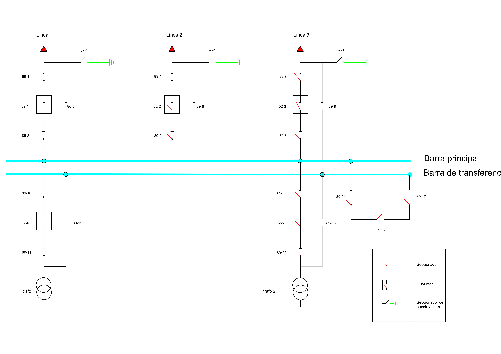

EXAMEN DE RECUPERACIÓN
Módulo: Subestaciones Eléctricas
Curso Académico 2025/2026 Puntuación Máxima: 10 Puntos
PARTE 1: CONCEPTOS TEÓRICOS (4 Puntos)
1.- Describe tres tipos de configuraciones de barras (ej: Simple, Doble, Interruptor y medio), indicando en cada una sus ventajas respecto a la continuidad del servicio y mantenimiento.
Solución:
1. Barra Simple: Económica. Desventaja: Mantenimiento en barras implica corte total.
2. Doble Barra: Dos juegos de barras con seccionadores selectores. Ventaja: Permite limpiar una barra pasando la carga a la otra sin corte.
3. Interruptor y medio: 3 interruptores para 2 circuitos. Ventaja: Máxima fiabilidad, si falla un interruptor no se pierde la línea.
2.- Describe y haz un ligero croquis mental de los elementos habituales en una posición de transformador de potencia (lado alta tensión), incluyendo protección contra sobretensiones.
Solución (Orden desde la línea al trafo):
1. Seccionador de barras.
2. Interruptor automático (Corte en carga).
3. Transformadores de medida (TI y TT).
4. Autoválvulas / Pararrayos: Conectados en paralelo justo antes del trafo para derivar rayos a tierra.
5. Transformador de potencia.
3.- Define qué son los Servicios Auxiliares. Diferencia entre C.A. y C.C.
Solución:
Son los suministros para el funcionamiento interno de la SE.
- C.A. (Alterna): Motores de seccionadores, ventiladores de trafos, luz.
- C.C. (Continua): Baterías. Crítico para Protecciones, Disparo de interruptores y Comunicaciones.
4.- Enumera y explica brevemente 3 relés de protección habituales (Códigos ANSI).
Solución:
- 50/51 Sobrecorriente: Dispara por exceso de intensidad (Instantáneo/Temporizado).
- 87 Diferencial: Compara entrada vs salida de una zona. Si difieren, hay falta interna.
- 21 Distancia: Mide impedancia (V/I) para localizar faltas en líneas largas.
PARTE 2: MANIOBRAS Y ANÁLISIS DE ESQUEMA (6 Puntos)
Atendiendo al esquema unifilar suministrado de la instalación:

Fig 1. Configuración de Barra Principal + Transferencia con Acoplamiento
5a) Identificación (1 punto): Observa el conjunto de equipos en la parte inferior derecha formado por los seccionadores 89-16, 89-17 y el interruptor 52-6. ¿Qué función tiene este conjunto y por qué es fundamental?
Es el Paño de Acoplamiento (o enlace de barras).
Su función es unir la Barra Principal con la Barra de Transferencia. Es fundamental porque permite realizar mantenimiento de cualquier interruptor de línea sin cortar el suministro, utilizando el interruptor 52-6 como "comodín" o sustituto.
5b) Maniobra de Mantenimiento (2,5 puntos): El interruptor 52-2 de la Línea 2 necesita revisión. Describe la secuencia exacta de maniobras para alimentar la línea por la Barra de Transferencia sin cortes. Usa los códigos del plano.
Secuencia Correcta (Criterio de tu examen):
1. Abrir 57-2: Verificar que la puesta a tierra está abierta (Seguridad).
2. Cerrar 89-6 (Bypass): Conectamos la línea a la barra de transferencia (vacía).
3. Cerrar 89-16 y 89-17: Cerramos los seccionadores del acoplamiento.
4. Cerrar 52-6 (Acoplamiento): Cerramos el interruptor para poner en paralelo total las barras.
5. Abrir 52-2: Abrimos el interruptor de línea (la carga se queda por el camino del bypass).
6. Abrir 89-4 y 89-5: Aislamos el interruptor 52-2 para poder tocarlo.
5c) Protecciones (0,5 puntos): Una vez realizada la maniobra del apartado b), la Línea 2 está en transferencia. Si cae un rayo en la línea, ¿qué interruptor disparará? Razona la respuesta.
Disparará el interruptor 52-6 (Acoplamiento).
Razón: Al estar el 52-2 abierto, la línea está unida eléctricamente a la barra de transferencia. La única fuente de energía que llega a esa barra viene a través del interruptor 52-6, que ahora actúa como protección de cabecera.
5d) Análisis de Errores (1 punto): En la maniobra anterior, imagina que el operario cierra el bypass 89-6 y, acto seguido, abre el interruptor de línea 52-2, olvidándose de cerrar el interruptor de acoplamiento 52-6. ¿Qué ocurriría con el suministro de la Línea 2?
Se cortaría el suministro (Apagón).
Aunque el bypass 89-6 esté cerrado, la Barra de Transferencia no recibe energía de la Barra Principal porque el interruptor que las une (52-6) está abierto. Al abrir el 52-2, dejamos la línea conectada a una barra muerta (sin tensión).
Extra: Tabla de Restauración. Rellena la tabla para devolver la Línea 2 a su estado normal (usando 52-2) y dejar libre la barra de transferencia.
Orden
Equipo (Código)
Acción
Razón breve
1
2
3
4
Solución de Restauración:
1. Cerrar 89-4 y 89-5: Preparamos el camino del interruptor principal.
2. Cerrar 52-2: Metemos la línea por su interruptor (ahora va por los dos caminos).
3. Abrir 89-6: Quitamos el bypass (el seccionador abre sin carga porque está en paralelo con el 52-2).
4. Abrir 52-6: Desconectamos el acoplamiento y liberamos la barra de transferencia.